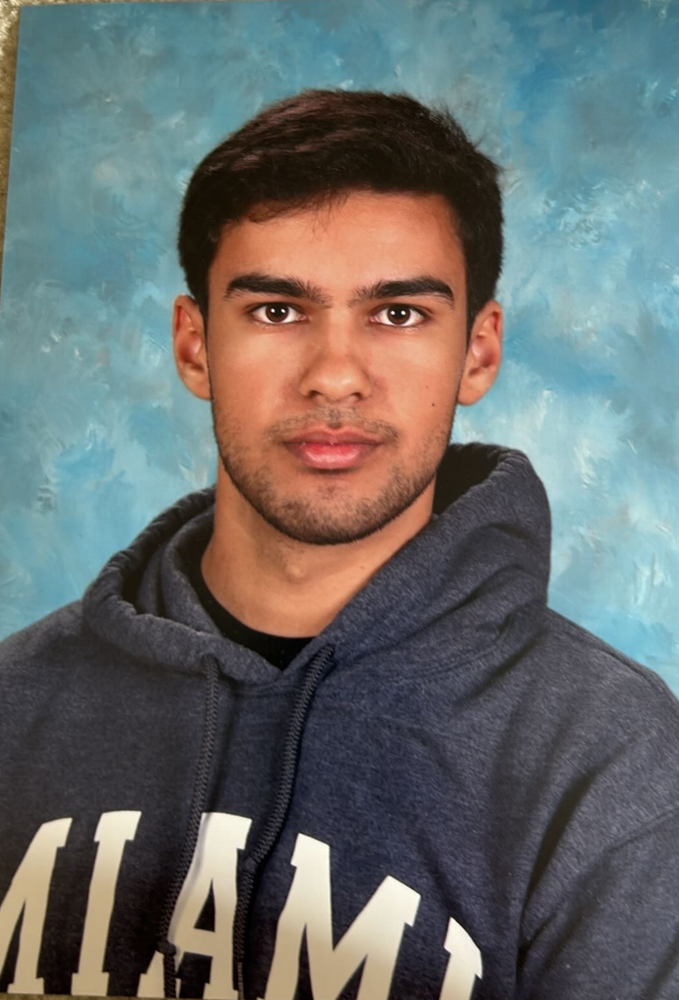
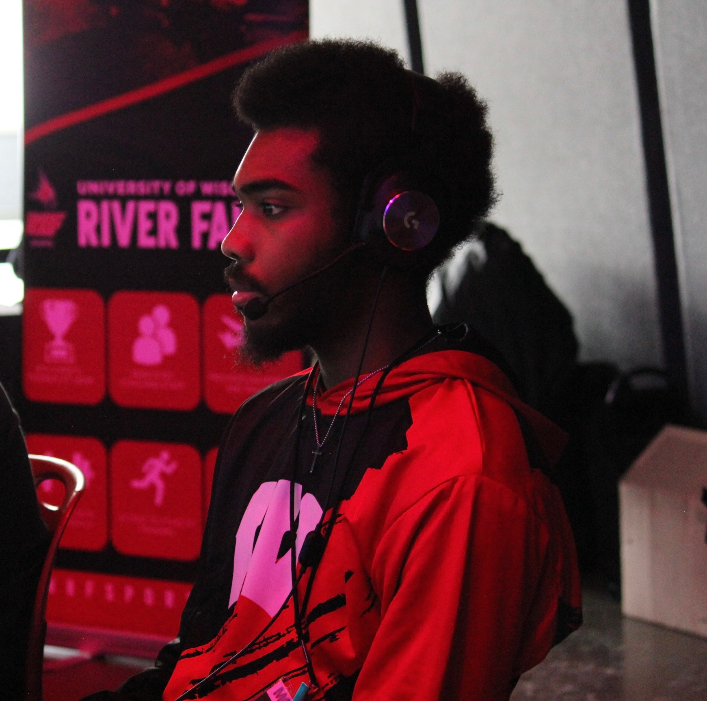

We’re UW–Madison students building a simple, accessible site about code, power, and inclusion. Get to know more about who we are!
Jason Thronson

Jason Thronson • Senior • Information Science
Hi everyone! I'm Jason Thronson, a senior studying Information Science at UW-Madison. I'm very interested in being a software developer, and I'm very passionate about healthy living as well as Linux Administration. When I'm not working on my schoolwork, I either hang out with my friends at memorial union or play basketball at the Nick.
Dhanvi Kanade
Dhanvi Kanade • Junior • Information Science
Hey guys! I'm Dhanvi Kanade, a junior studying Information Science at UW-Madison. Outside of school, I like playing volleyball, baking, and dancing. I enjoy learning new things as well as meeting new people.

Orion King • Senior • Information Science
Orion King
Hello! I’m Orion. I study at UW–Madison and I’m passionate about trading, fitness, bowling, and building creative projects like games and content. Outside of school, I like lifting, gaming, and working on side hustles. I enjoy meeting new people, learning from different perspectives, and finding ways to grow both personally and professionally.